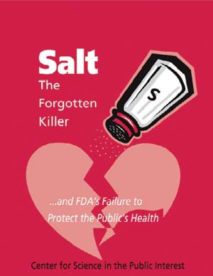
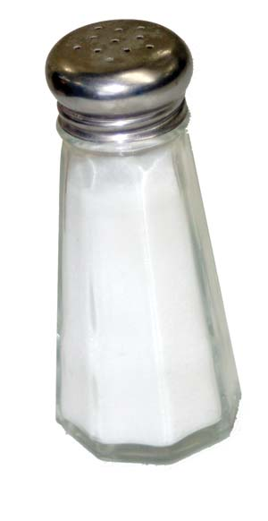

Avoid Salt To Reduce Blood Pressure
Look beyond the saltshaker to reduce your sodium intake - most added salt comes from processed foods.
By Lynn Keiley
June/July 2007
Consider for a moment, the idea of cutting back on the amount of salt in your diet. What’s the first thing you’d do? If you glanced suspiciously at your saltshaker, you might be surprised to learn that the food we prepare at home accounts for only about 11 percent of the salt most of us consume in a single day. Instead, the bulk of the salt we eat - anywhere from 75 percent to 80 percent - is added to processed foods. Pass on the salt at the dinner table, and you still can consume more than the recommended daily amount by stopping at the local deli or fast-food joint for lunch.
HOW MUCH IS TOO MUCH?
Just what is the recommended daily allotment of salt? Although the amount of sodium necessary for good health continues to be debated, the Food and Nutrition Board of the National Academy of Sciences says adequate sodium intake is 1,200 to 1,500 milligrams each day, and that you should have no more than 2,300 milligrams per day. This equals about 1 teaspoon of table salt, which is 40 percent sodium and 60 percent chloride. But the average American adult eats closer to 4,000 milligrams of sodium every day, according to the American Medical Association (AMA). The Center for Science in the Public Interest (CSPI) estimates that reducing sodium consumption by half in the United States would save about 150,000 lives and $1.5 trillion in medical costs over 20 years.
Salt is a $340 million per year industry in the United States; and the food industry depends heavily upon the ubiquitous white crystal. As well-known nutritionist Marion Nestle explains in her book, What to Eat (North Point Press, 2006), salt is a cheap means of adding “flavor” to processed foods and extending shelf life. Plus, it makes us thirsty so we buy more beverages. It also binds water in food and makes it weigh more, so we pay extra for water weight.
Any official recommendations to downsize the amount of salt in the American diet would have far-reaching, multimillion dollar consequences. Not surprisingly, for every study that confirms excess salt is a primary cause of hypertension, kidney disease and other evils, another expert or industry-aligned representative quickly appears to downplay the findings and suggest that restricting sodium for the overall population would have unhealthful, perhaps even dangerous effects. Needless to say, these contradictory health recommendations have confused consumers.
SALT BASICS
Salt has been a highly valued commodity for centuries. The Chinese were taxing and trading salt in the time of Confucius (551 to 479 B.C.), and in certain markets in North Africa during the 14th century, salt was reputedly traded for its weight in gold (though this was probably an exaggeration). Centuries later, Mahatma Gandhi and his followers famously marched to the sea and harvested salt in defiance of the British salt tax.
Sodium is a vital nutrient. In fact, our bodies consist primarily of water and sodium. The human body can’t make its own sodium, yet it’s essential to our survival. It assists in the transport of nutrients and oxygen throughout the body and also facilitates nerve transmission and muscle movement.
Although we may be genetically wired to need some sodium, our ancestors ate far less than we do today. For millions of years, humans ate a diet that contained less than 1 gram (1,000 milligrams) of salt per day. Today, some people consume up to 10 times that amount. Much of what we consume is excreted in our sweat and urine, but individuals vary in their capacity to flush salt from their bodies. Scientists think our genetic makeup is still geared to process the smaller amounts of salt our ancestors ate, which is why our increased salt consumption leads to higher incidences of heart and kidney disease.
The mechanism by which salt increases blood pressure is poorly understood at this point. Some researchers think that it’s related to fluctuating fluid pressure influenced by the kidneys’ ability to excrete salt. The body’s ability to monitor this filtration process tends to diminish with age, and certain people tend to be more salt sensitive, particularly blacks, the elderly and the obese.
The consequences of a high-salt diet go beyond high blood pressure, especially for the cardiovascular system. Excess sodium can damage the muscles of the heart, stiffen arteries and impede blood flow. In a recent review of medical literature, researchers at the University of Maryland School of Medicine concluded that there was consistent evidence to link increasing salt consumption to kidney tissue injury.
SALT AND HIGH BLOOD PRESSURE
Although there’s much dissent in the medical community about the specifics, one point that all the experts agree upon is that there is a direct link between excess salt in the diet and high blood pressure. Many of the early studies about salt and high blood pressure looked at cultural information. Early research compared societies who ate very little salt with populations that ate higher amounts and found that with very few exceptions, those who ate more salt had much higher blood pressure. Later studies conducted in laboratory settings were less conclusive.
The INTERSALT study of more than 10,000 people in 52 different study centers showed a clear link between salt and blood pressure; however, the effect upon individuals varied greatly. But, when the researchers compared the higher blood pressure levels against the participants’ age, a pattern began to emerge. While young adults were generally less sensitive, middle-aged people or older were more likely to have high blood pressure.
A World Health Organization study of more than 7,000 people aged 50 to 54 years old, called CARDIAC, found men to be more salt sensitive than women, although women who were postmenopausal did show increased blood pressure, suggesting a tendency for salt sensitivity to increase at menopause.
The medical community continues to debate the methodology, results and significance of these trials. Conducting long-term studies is difficult because of funding issues and the ethics of putting people on high salt diets for extended periods of time. However, the most recent study, known as DASH (Dietary Approaches to Stop Hypertension), went to great lengths to create a clear picture of the impacts of salt in the diet. Researchers meticulously monitored salt intake of 412 individuals with high blood pressure. Divided into three groups, the first ate a diet that contained 3,300 milligrams of sodium each day, the second ate 2,400 milligrams, and the third group consumed no more than 1,500 milligrams of sodium per day, over the course of 30 days. Each study participant received prepared meals, including snacks, and adherence to the diet was strictly monitored. The researchers found a very significant reduction for those on a low salt diet in all of the study’s participants, even the control subjects whose blood pressure was in the normal range at the beginning of the study.
THE CONTROVERSY: SCIENCE VS. THE SALT INDUSTRY
Those who argue against lowering sodium intake caution that the available evidence doesn’t warrant a mandate to lower salt consumption for everyone. They think that many of the studies have inherent limitations, and argue that salt is a vital nutrient and limiting its consumption could have unforeseen implications upon the nervous system and insulin resistance. Some of these medical experts have ties to the Salt Institute, the industry’s lobbying group.
Physicians in the United Kingdom have been railing against the salt industry for years. In 2003, the British government’s Food Standards Agency started a campaign to encourage food manufacturers to reduce added sodium, and recommended that the public consume no more than 6 grams of salt (2,400 milligrams of sodium) per day.
In a study published in the journal Hypertension, Graham A. MacGregor, professor of cardiovascular medicine at St. George’s Hospital Medical School in London, and his colleagues found that reducing salt intake made people drink less. Since about 25 percent of the fluids consumed in the UK are in the form of soft drinks, the study’s authors estimated that reducing salt intake would reduce soft drink sales by 13 million sodas per day, or a total of about 5 billion per year. In the United States, where we consume many more soft drinks, they estimated the impacts could be as high as 40 billion fewer sodas sold per year. Since some soft drink companies also own companies that specialize in highly salted snacks, the authors note these companies may be creating “an artificial controversy doubting the relationship between salt intake and blood pressure, presumably in the hope of stopping or slowing down any reduction in population salt intake to protect soft drink sales.”
In 2006, the AMA stepped up to the plate and issued strong recommendations to limit the amount of salt added to processed foods. They recommended a 50 percent reduction in the amount of salt allowed in processed foods, to be achieved over a period of 10 years. In order to meet this goal, they called upon the Food and Drug Administration (FDA) to revoke the minimally regulated “generally recognized as safe” status of salt, which would cause it to be reclassified as a food additive. Under the new classification, food processors would be more closely regulated and required to follow limits for specific categories of food.
The FDA has yet to implement the AMA’s recommendations, and the Salt Institute was quick to issue a press release accusing the AMA of having “misread the science.”
While we wait to see whether science or industry will prevail, you can make your own decision about whether or not cutting back on salt is a good idea. As MacGregor said during a spirited debate that appeared in the letters pages of the British Medical Journal, “The totality of evidence for reducing salt is stronger than for any other non-pharmacological treatment.”
In other words, for those who suffer from, or are at risk for high blood pressure, reducing the amount of salt in your diet can have more measurable impacts than anything else you can do besides taking medication, and it can potentially help you minimize the need for medication. Experts agree, reducing salt is one of the most effective things we all can do to prevent heart disease and stroke.
5 Ways to Reduce Sodium
Follow these suggestions to decrease your salt intake, as well as your risk for high blood pressure:
- Read food labels carefully, particularly highly processed foods, where excessive salt may be lurking.
- Increase fruits and vegetables in your diet, and decrease alcohol consumption.
- Cut back salt intake gradually over a period of weeks or months, and you’ll probably find that you don’t miss that salty flavor in your food.
- Maintain a healthy weight.
- Make time to exercise.
Hidden Salt In Processed Foods
Experts recommend consuming no more than 2,300 milligrams of sodium per day, but it’s estimated the average American eats nearly twice that amount. Many processed foods have high amounts of added sodium:
| Item | Serving Size | Sodium (mg) |
| Cheese fries | 1 order | 4,000 |
| Rueben sandwich | 1 | 3,270 |
| Kung pao chicken with rice | 1 order | 2,610 |
| Lasagna | 1 order | 2,000 |
| Soy sauce | 2 tbsp | 1,840-2,520 |
| Supreme pizza | 1 large slice | 1,580 |
| Campbell’s Vegetarian Vegetable Soup | 240 g | 790 |
| Cheeseburger, small | 1 | 740-810 |
| Campbell’s Healthy Request Vegetable | 240 g | 480 |
| Hot dog | 1 | 420-680 |
| Cottage cheese | ½ cup | 360-410 |
| Spaghetti sauce | ½ cup | 270-770 |
| Turkey breast, packaged | 1 slice | 180-340 |
| Tomatoes, canned, diced | ½ cup | 200-380 |
| Salad dressing | 2 tbsp | 170-600 |
| Ketchup | 2 tbsp | 140-380 |
| Wheat bread | 1 slice | 130-220 |
| White bread | 1 slice | 115-310 |
Sources: American Medical Association and the Center for Science in the Public Interest
|
MATTHEW T. STALLBAUMER This turkey sandwich has 1,344 mg of sodium – more than a Big Mac, medium Coke and medium order of fries from McDonald’s. |
 CENTER FOR SCIENCE IN THE PUBLIC INTEREST The Center for Science in the Public Interest complied a comprehensive report on salt and your health. Download a copy at cspinet.org/new/pdf/salt_report_with_cover.pdf. |
FOTOLIA/BBURGESS One order of cheese fries contains nearly twice the recommended amount of sodium you should eat in a day! |
 VEER/DIGITAL VISION PHOTOGRAPHY Asian foods made with soy sauce can contain very high levels of sodium: 2 tablespoons have all your recommended daily sodium. |
 MATTHEW T. STALLBAUMER Home-cooked food accounts for only about 11 percent of the salt most of us consume in a single day. Instead, the bulk of the salt we eat - anywhere from 75 percent to 80 percent - is added to processed foods. |
|